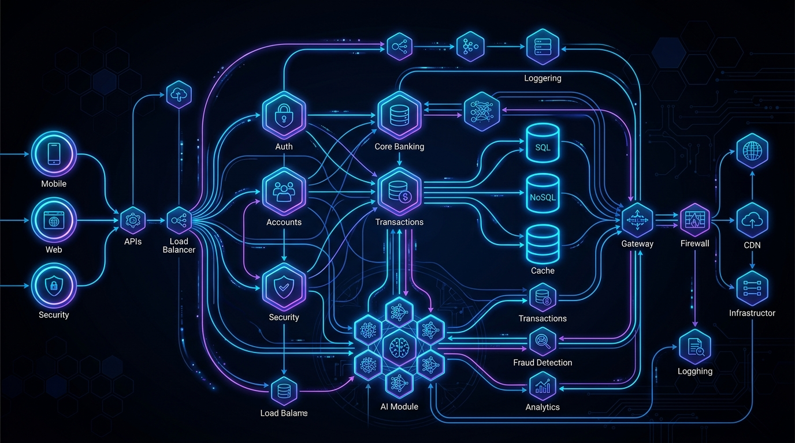

PROFESSIONAL EXPERIENCE
Senior Go / Backend Developer
Altzor Digital Solutions India Pvt. Ltd. (Client: Equifax) | Mar 2026 - Present
- Architected high-throughput Go microservices and event-driven data pipelines on GCP for
Equifax’s mission-critical Keying & Linking identity resolution platform.
- Engineered high-concurrency identity resolution utilizing worker pools, goroutines, and channels
against high-volume consumer datasets in Google Cloud Spanner.
- Built asynchronous event-driven pipelines with GCP Pub/Sub and Apache Beam to process continuous
address-linking streams with ultra-low latency.
- Designed FCRA-compliant data governance layers and optimized globally distributed Spanner
databases, maximizing read/write throughput.
Senior Software Engineer
Quantique Minds Pvt Ltd | Sep 2025 - Mar 2026
- Spearheaded the architecture and delivery of highly available Golang microservices for SaaS
platforms in workspace and restaurant management.
- Engineered high-performance RESTful APIs leveraging MongoDB and Redis, significantly reducing
data retrieval latency.
- Orchestrated containerized deployments on AWS utilizing robust CI/CD pipelines for zero-downtime
releases.
Senior Software Engineer
Kenshi Labs Pvt Ltd | Jul 2024 - Aug 2025
- Developed SmartSME Accounting & Inventory backend in Golang, deployed as microservices.
- Optimized data workflows with MongoDB + Redis, ensuring high performance at scale.
- Containerized services with Docker and supported cloud deployment.
Senior Software Engineer / Team Lead
Monty Mobile | Apr 2015 - Apr 2024
- Led backend development for Go-STP distributed telecom system, improving throughput and
robustness.
- Built Multi-IMSI product in Golang/C++ for global roaming.
- Designed secure backend modules with PostgreSQL and Keycloak.
SS7 Software Engineer / Module Lead
XIUS (Megasoft Ltd.) | Mar 2006 - Apr 2015
- Stabilized and scaled SMS Gateway backend, ensuring high-volume message delivery.
- Part of AAA team to build distributed backend services for roaming and AAA servers.
- Applied deep protocol-level expertise to design resilient systems.
KEY PROJECTS
Global Multi-Currency Digital Wallet
View Source
Stack: Golang, gRPC/Protobuf, MongoDB, RabbitMQ, Gemini AI, Docker, Kubernetes

- Engineered an ACID-compliant digital wallet core banking engine using Golang microservices and
the Transactional Outbox pattern.
- Integrated Gemini Flash for real-time contextual AI fraud detection and transaction blocking.
- Implemented Active-Standby multi-region disaster recovery and Zero-Trust JWT authentication.
ClayWorks (Quantique Minds)
Stack: Golang, MongoDB, Redis, AWS
- Architected a highly scalable SaaS backend for workspace management, streamlining dynamic tenant
workflows.
- Implemented a resilient, high-availability infrastructure to ensure consistent system uptime and
reliability.
SmartSME (Kenshi Labs)
Stack: Golang, Docker, AWS
- Spearheaded the end-to-end development of a comprehensive accounting and inventory SaaS backend.
- Optimized database schema and query performance, significantly reducing latency under heavy
load.
Go-STP (Monty Mobile)
Stack: Golang, PostgreSQL, Keycloak
- Optimized a mission-critical distributed telecom signaling system for global scale.
- Re-engineered core processing pipelines, successfully increasing overall system throughput by
30%.
China-USSD (9Mobile Nigeria)
Stack: Golang, RabbitMQ, MongoDB
- Integrated robust USSD services leveraging a reliable message queuing architecture.
- Dramatically improved system stability, resulting in a 40% reduction in operational support
issues.